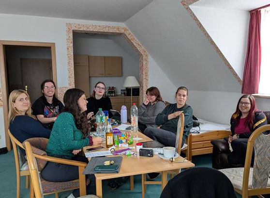
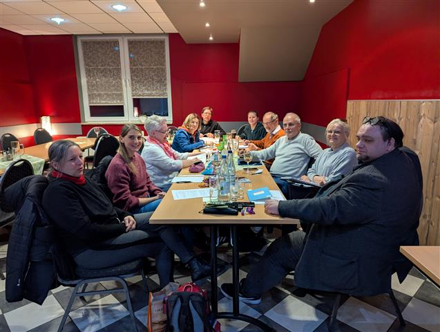
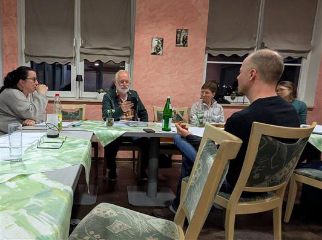
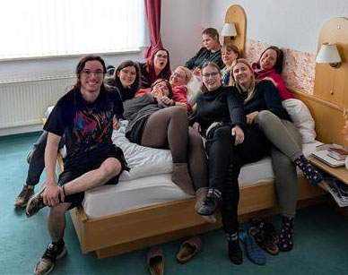
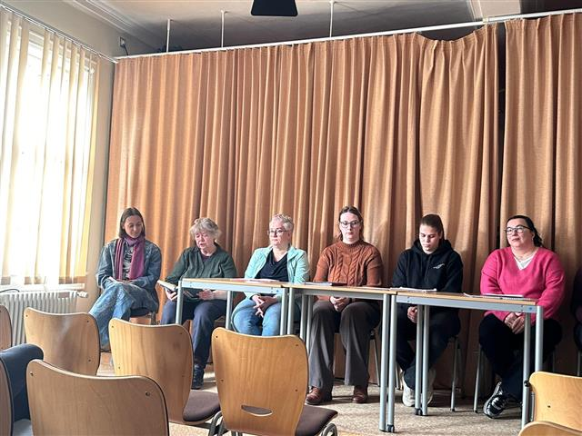
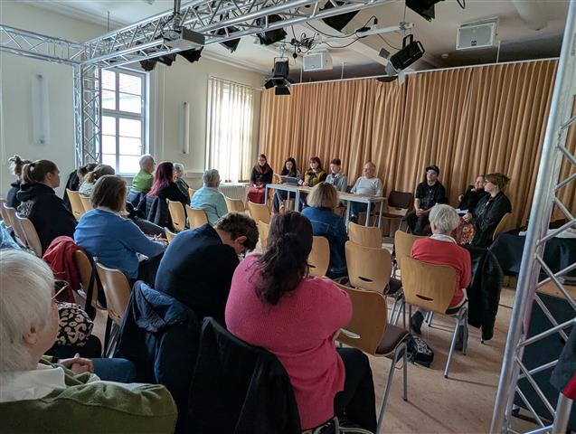
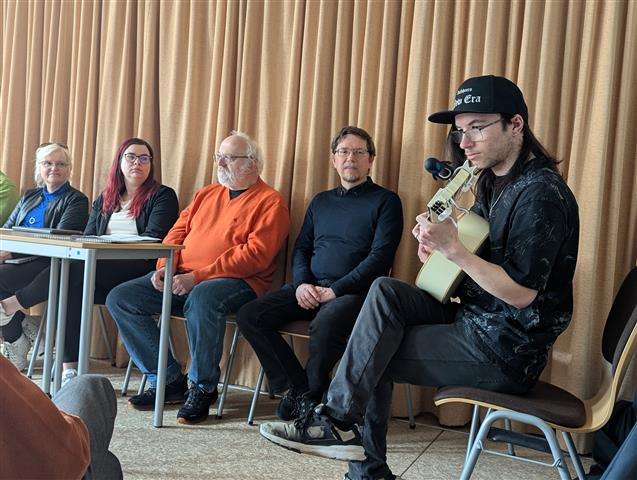
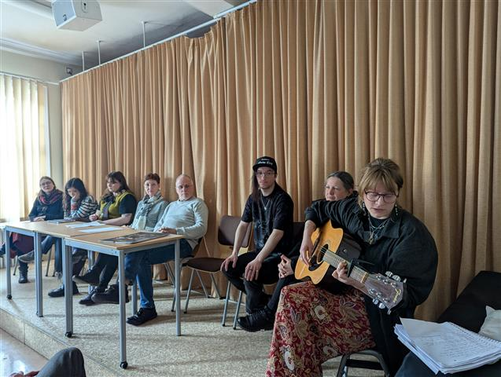

Manche der Teilnehmerinnen und Teilnehmer der 37. Werkstatttage des Südthüringer Literaturvereins fanden das demokratisch abgestimmte Motto „Irrwege" durchaus etwas irritierend. Doch die Lektorinnen und Lektoren hatten sich gut darauf vorbereitet. Mit ihren Schreibaufgaben stellten André Schinkel, Christian Rosenau und Natalie Ewald die Weichen für das Entstehen erstklassiger Texte. Wieder waren es fast 30 Autoren, die sich im Hotel zum Kloster in Rohr unter besten Bedingungen auf intensives literarisches Arbeiten einließen. Im Abschlussprogramm am Sonntagvormittag in der Meininger Volkshochschule kamen die besten in Rohr entstandenen Texte zum Vortrag und wurden – mitunter gar lautstark bejubelt – sehr gut aufgenommen. Der Dank der Teilnehmer gilt den Seminarleitern für ihr Engagement, aber auch der Kulturstiftung Thüringen, die mit ihrer Förderung erst die moderaten Teilnahmegebühren möglich macht, sowie dem Team des Hotels Zum Kloster Rohr.







